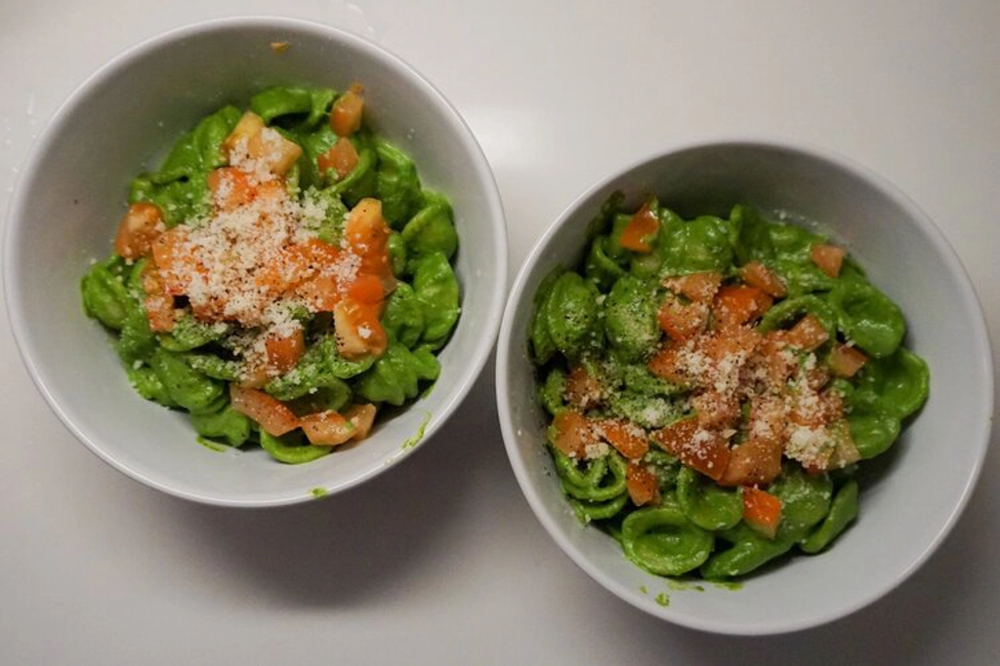
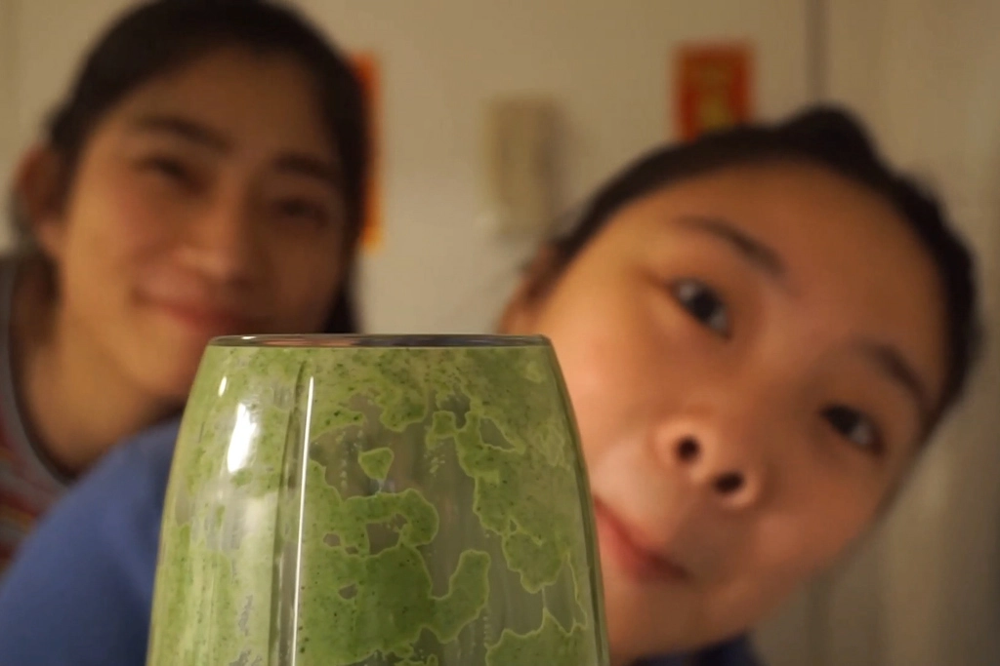

Kale Pesto Pasta
Oct 22 - Written by Bonnie and Emily
With all the quarantine cooking taking over the web, we thought you all might also want to try your hand at a healthy -- but delicious-- meal.
We tried Bon Appetit’s Kale Pesto Pasta from their healthyish recipe series, obviously with a few of our own little tweaks and fun! Chris Morocco really fooled us with his Youtube video cause our tuesday night cooking definitely wasn’t as smooth sailing as his quick 30 minute dinner. Not to mention the struggles we had trying to open a Nutribullet and lingering thoughts of how our pasta really closely resembled guacamole. But we have to admit, despite the chaotic events of the night, the pasta was mm-mm delicious--who would’ve thought kale could be so creamy??
How did we spice up this super easy and quick recipe you ask? Simple! Just a quick chop of a little tomato and an extra sprinkle of parmesan cheese spruced it up easily. Not to mention we switched out the recommended whole wheat spaghetti for some cute Orecchiette, or as Bonnie calls them mini pasta bowls, that scoop up all the sauce into every bite.
Don’t be scared by our whole crazy kitchen process cause this pasta was worth the try! Also, it feels nice to attempt to be healthy once in a while.